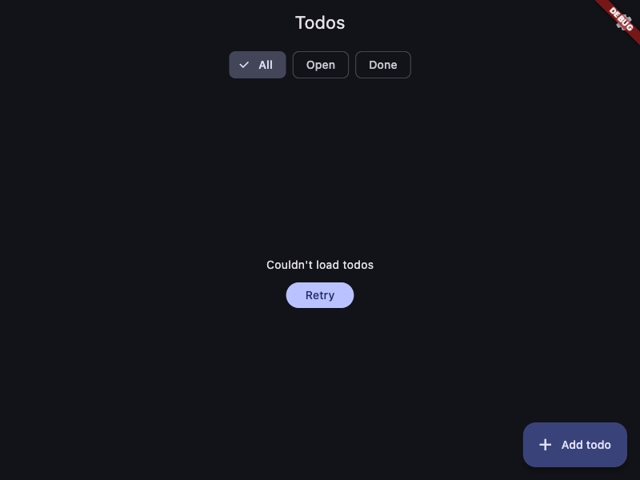

FlutterPilot
Let your coding agent use your running Flutter app the way you would: look at the screen, tap and type, break the network on purpose, find the code behind a widget, hot reload, and check that the fix works. Over MCP, against the app you already have running.
A real loop: find it, fix it, prove it
Recorded on the repository's example todo app on macOS. Every call and
response below is what the tools actually returned; only long lists are cut
(…). The question: what does the app show when there is no
network?
-
Look at the app
get_app_summary() 13 ms • Route: / (Depth: 1) • Uncaught Errors (0): None • Tappable Elements (25): - [ChoiceChip] "All" (286, 64) - [ListTile] "delectus aut autem" (0, 106) [key: todo_1] - [Checkbox] "Done: delectus aut autem" (16, 110) …
-
Take the network away, pull to refresh
simulate_network(condition: "offline") 1 ms swipe_widget(key: "todo_1", direction: "down") 650 ms Pulled to refresh. Route unchanged (/). Widget tree: +7 / -36 / ~0. + _LoadError + Text["Couldn't load todos"] Tappable now (6): "All", "Open", "Done", "Retry", "Settings", "Add todo [add_todo]"
The response already says what happened; no screenshot needed to know. But the message is the same one a server error gives, so a user can't tell that the fix is on their side.
-
Find the code
inspect_widget(key: "Couldn't load todos") 5 ms {"source": {"type": "Text", "loc": "lib/screens.dart:126:11"}, "ancestors": ["Column lib/screens.dart:123:14", "Center lib/screens.dart:122:12", "_LoadError lib/screens.dart:63:43", …]}
-
Fix it and hot reload
In
_LoadError, a request that got no answer at all now says so:final offline = switch (dio?.type) { DioExceptionType.connectionError || DioExceptionType.connectionTimeout => true, _ => false, }; … offline ? "You're offline. Check your connection and retry." : status == null ? "Couldn't load todos" : "Couldn't load todos (HTTP $status)",hot_reload() 138 ms Hot reload applied.
-
Prove it, without restarting anything
assert_widget(text: "You're offline. Check your connection and retry.") 3 ms {"status": "passed"}

Before: the same message as any other failure. After: the user knows what to do. -
Check nothing else broke
simulate_network(condition: "normal") tap_widget(key: "Retry", waitFor: "todo_1") 518 ms Widget tapped "Retry"; then appeared "todo_1". Route unchanged (/). mock_http_response(urlPattern: "/todos", statusCode: 500, body: '{"error":"server_down"}') swipe_widget(key: "todo_1", direction: "down") 624 ms + Text["Couldn't load todos (HTTP 500)"] assert_widget(text: "Couldn't load todos (HTTP 500)") 1 ms {"status": "passed"}
The fix is now a widget test in the example (
no connection says so, not just that loading failed), so it stays fixed.
run_on_devices, which then lists how the screens differ.Set up
In your Flutter project:
# the CLI (from a checkout until the packages are on pub.dev) dart pub global activate --source path ./packages/flutterpilot_cli # adds the SDK and the plugins your app uses (Riverpod, Bloc, Dio, Drift, …) flutterpilot init # writes the MCP config for Claude Code, Cursor or VS Code flutterpilot mcp install # run the app however you like; the server finds it flutter run # something not working? it checks everything and prints the fix flutterpilot doctor
No changes to the app at all? The server still connects to any debug build and gives you the widget tree, screenshots, errors with source lines, logs, hot reload and memory/HTTP profiles. Taps, text entry and assertions need the SDK.
What it covers
66 tools; an app only sees the ones that work for it (a plugin's tools appear when the app uses that plugin). The full list with parameters is in TOOLS.generated.md.
See the app
Summary of the screen, widget tree of your own widgets, screenshots, errors with your source line, logs.
Use it
Tap, type, keys, scroll, swipe, drag, forms. Each action answers with what changed on screen.
Check it
Assertions and waits in milliseconds, visual diffs, feature checks against acceptance criteria with a report.
Break the network
Mock responses, go offline or slow, read requests with bodies (secrets masked).
Find the code
The file and line that creates any widget, and why a layout overflows.
Performance
Frame budget, a CPU profile of one action, memory leak checks with what keeps an object alive.
Accessibility
Unlabeled controls, small tap targets, contrast measured from pixels, screen reader order.
Keep it working
Turn a flow into an integration test, save and load app states, run one flow on several devices.